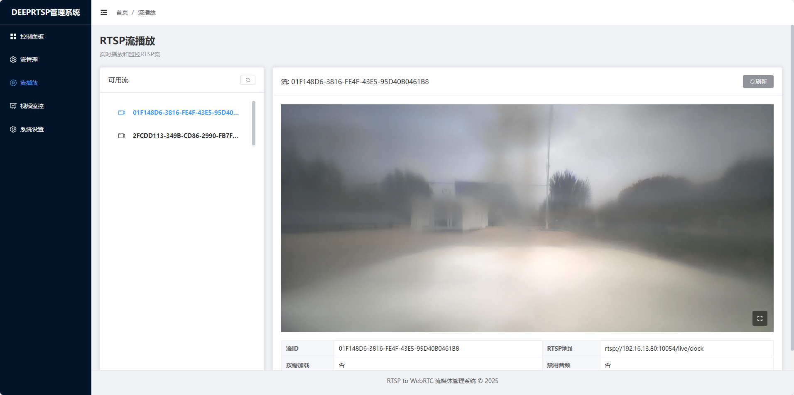

安装部署指南

操作步骤
1. 下载并上传文件
- 下载可编译文件
- 地址:
git clone https://gitee.com/deep-rtsp/deep-rtsp.git - 地址
git clone https://github.com/uviewjs/deep-rtsp.git - 将文件上传至服务器指定目录
2. 解压文件
sudo tar xvf deep-rtsp.tar
3. 进入目标目录
cd deep-rtsp
4. 赋予执行权限
sudo chmod u+x deep-rtsp
5. 启动程序
sudo ./deep-rtsp
6. 访问服务
- 运行成功后，通过以下路径访问：
http://服务器IP:10088/app
注意事项
- 确保服务器已安装
tar工具（一般系统默认自带）。 - 执行命令时需具备
sudo权限（或使用 root 用户操作）。 - 若访问失败，检查服务器防火墙是否放行
1008810087端口。